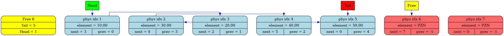
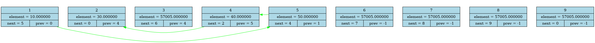

====DUMP FROM src/main.cpp:10====
empty list
=================================

====DUMP FROM src/main.cpp:14====
data[1] = 10.00 next[1] = 0 prev[1] = 0 free = 2

====DUMP FROM src/main.cpp:17====
data[1] = 10.00 next[1] = 2 prev[1] = 0 free = 3
data[2] = 30.00 next[2] = 0 prev[2] = 1 free = 3

====DUMP FROM src/main.cpp:23====
data[1] = 10.00 next[1] = 3 prev[1] = 0 free = 4
data[3] = 20.00 next[3] = 2 prev[3] = 1 free = 4
data[2] = 30.00 next[2] = 0 prev[2] = 3 free = 4

====DUMP FROM src/main.cpp:26====
data[1] = 10.00 next[1] = 3 prev[1] = 0 free = 5
data[3] = 20.00 next[3] = 2 prev[3] = 1 free = 5
data[2] = 30.00 next[2] = 4 prev[2] = 3 free = 5
data[4] = 40.00 next[4] = 0 prev[4] = 2 free = 5

====DUMP FROM src/main.cpp:30====
data[1] = 10.00 next[1] = 3 prev[1] = 0 free = 6
data[3] = 20.00 next[3] = 2 prev[3] = 1 free = 6
data[2] = 30.00 next[2] = 4 prev[2] = 3 free = 6
data[4] = 40.00 next[4] = 5 prev[4] = 2 free = 6
data[5] = 50.00 next[5] = 0 prev[5] = 4 free = 6

====DUMP FROM src/main.cpp:33====
data[1] = 10.00 next[1] = 3 prev[1] = 0 free = 2
data[3] = 20.00 next[3] = 4 prev[3] = 1 free = 2
data[4] = 40.00 next[4] = 5 prev[4] = 3 free = 2
data[5] = 50.00 next[5] = 0 prev[5] = 4 free = 2
